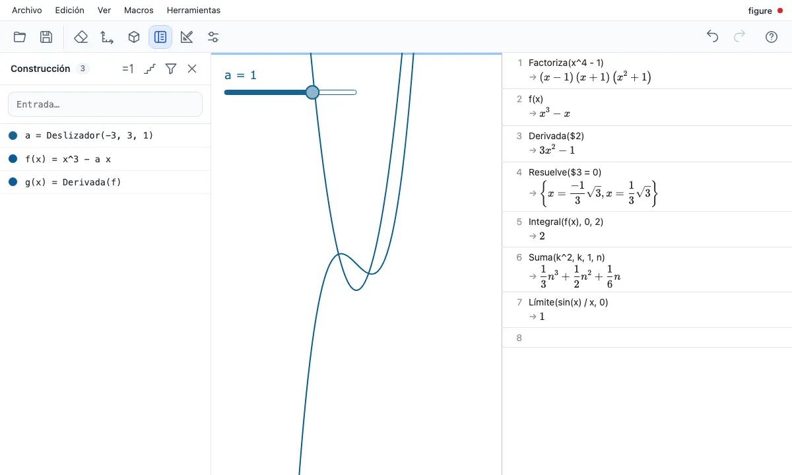

El cálculo simbólico
DocGeo calcula con valores exactos mediante Giac, el motor de cálculo simbólico de Xcas: derivadas, primitivas, factorizaciones, ecuaciones, límites, sumas, en las fórmulas de la figura como en una vista de cálculo simbólico. También encuentra la ecuación de un lugar geométrico y demuestra propiedades geométricas.

Giac se carga la primera vez que un cálculo lo necesita, nunca para una figura que no lo necesita. Las últimas respuestas se guardan en la figura: se abre y se muestra sin esperar a Giac, incluso sin conexión. Si Giac no puede cargarse, aparece «⚠ Giac» abajo a la izquierda: las respuestas ya conocidas siguen mostrándose, las demás quedan indefinidas.
Los comandos de cálculo simbólico
Se usan en cualquier fórmula, como una función. Una expresión cuya fórmula es solo uno de estos comandos muestra la respuesta de Giac en lugar de su fórmula.
| Comando | Resultado |
|---|---|
Derivada(f),
Derivada(e, v),
Derivada(e, v, n)
|
derivada, derivada n-ésima respecto de v |
Integral(e),
Integral(e, v)
|
primitiva |
Integral(x^2, 0, a),
Integral(e, v, a, b)
|
integral de a a b, valor exacto |
Factoriza(e) |
factorización sobre los racionales:
x^2 - 2 queda igual
|
FactorizaI(e) |
factorización con radicales: (x − √2)(x + √2) |
Desarrolla(e),
Simplifica(e)
|
forma desarrollada, forma simplificada |
Resuelve(x^2 = 2),
Resuelve(e, v)
|
lista ordenada de las soluciones reales de una ecuación, o de una expresión nula |
ResoluciónC(e) |
soluciones complejas |
Suma(e, k, a, b) |
suma de los e para k entero de a a b |
Límite(e, a),
Límite(e, v, a)
|
límite en a, que puede ser ∞ |
PolinomioTaylor(e, a, n),
PolinomioTaylor(e, v, a, n)
|
polinomio de Taylor de orden n en a |
La variable v es x, y, z o t, por defecto la primera que lee la
expresión. Una función de la figura se escribe por su nombre:
g(x) = Derivada(f).
-
Un deslizador sigue siendo un símbolo para Giac:
Factoriza(x^2 - a)muestra x² − a incluso cuando a vale 4. Mover el deslizador no pide nada a Giac: la respuesta solo se vuelve a evaluar, durante el movimiento. -
Excepciones: el orden n de un polinomio de Taylor y los
límites de una suma sin forma simple (
Suma(1/k, k, 1, n)) se leen por su valor: un deslizador da una respuesta por cada valor entero. -
Integral(f, a, b), siendo f el nombre de una función, sigue siendo el comando que dibuja el área;Integral(x^2, 0, 1)oIntegral(e, v, a, b)calcula el valor exacto. - Mientras no llega la respuesta, el objeto conserva su último valor. Una respuesta que DocGeo no sabe leer deja el objeto indefinido. Una derivada la calcula DocGeo mientras espera a Giac.
La vista CAS
Como la de GeoGebra: líneas de cálculo numeradas, junto a la figura o en su propia pestaña.
| Acción | Cómo |
|---|---|
| Añadir la vista | Archivo › Vista › Nueva vista CAS (una por figura), o Archivo › Nueva pestaña CAS («CAS1», «CAS2»…) |
| Calcular una línea | escribir en la última línea, vacía, y luego Intro: aparece la respuesta y espera una línea nueva |
| Recuperar una línea | en la última línea, ↑ recupera las líneas anteriores, la más reciente primero, y ↓ vuelve al texto que se está escribiendo, como en un terminal |
| Completar un nombre | desde la segunda letra, una lista propone los comandos, las funciones, los objetos de la figura y los nombres definidos en la vista: ↑ y ↓ para elegir, Tab o Intro para insertar, Esc para cerrar |
| Modificar una línea | hacer clic en ella y luego Intro; Esc devuelve el texto anterior, ↑ y ↓ pasan de una línea a otra |
| Eliminar una línea | vaciarla y luego Intro: los números siguientes se desplazan |
| Eliminar la vista | Archivo › Vista › Eliminar la vista CAS |
Cada cambio se anula con Deshacer. Una línea incomprensible se rechaza, en rojo.
Escribir una línea
-
Una línea es una fórmula, con o sin comando:
sqrt(12) - sqrt(3)da √3,Factoriza(x^4 - 1)su factorización. -
$2es la respuesta de la línea 2. Cuando se elimina una línea, los$nse renumeran, y una referencia a la línea eliminada se sustituye por su fórmula. -
b := 3yh(x) := x^2 + 1definen un número o una función para las líneas siguientes. -
Los objetos de la figura se leen por su valor actual: con a
= 2,
a^2da 4. Cuando se mueven, las líneas que los leen se vuelven a calcular. Una letra que no es un objeto es una variable libre:b^2queda b². -
piylnse escriben como en GeoGebra,∞tambiéninf. Los ángulos están siempre en radianes, incluso en una figura en grados. -
ValorNumérico(e),ValorNumérico(e, n)dan un valor aproximado (con n cifras);ConservaEntrada(e)muestra e tal cual, sin cálculo. Una línea entre comillas,"Cálculo exacto", es un simple texto. -
?sustituye una respuesta que Giac no da o que DocGeo no sabe leer.
Señalar con el ratón
Mientras se escribe una línea ya empezada, hacer clic en un
objeto de la figura escribe su nombre; hacer clic en otra línea
escribe su $n. En una línea vacía, la figura
responde como siempre.
Definir un objeto de la figura
Una definición que solo lee objetos de la figura crea también el
objeto, con su línea en la Construcción:
m(x) := x^2 + a dibuja la función m. Una definición
que lee una variable libre, un $n o un nombre
definido solo en la vista (n := b^2) queda propia
de la vista.
En el lector, las líneas se muestran en el idioma del navegador.
Curvas algebraicas
Una ecuación de cualquier grado, o no polinómica, escrita en la
Construcción es una curva: f = x^3 + y^3 = 3x y (el
folium de Descartes), c = sin(x) = y. Se dibuja
donde atraviesa la ventana y sigue a la ventana cuando se
desplaza; se pueden colocar puntos sobre ella y cortarla con
otros objetos.
| Comando | Resultado |
|---|---|
EcuaciónLugar(M, P) |
la curva entera que describe el punto M cuando el punto sobre objeto P recorre su objeto |
Envolvente(d, P) |
la curva entera tangente a las posiciones de la recta d cuando P recorre su objeto |
Como en GeoGebra, es la ecuación entera, con todas sus ramas, y
no solo la parte recorrida: EcuaciónLugar de un
punto que recorre un segmento da la recta. Mientras se espera a
Giac, o para una construcción que no traduce (macros,
bisectrices, circunferencia inscrita, deslizador como motor,
espacio), es el lugar recorrido de
LugarGeométrico.
Demostrar
Seis predicados, cuyos argumentos son nombres de objetos, dicen
si una propiedad se cumple en la figura tal como está:
true o false.
| Predicado | Verdadero si |
|---|---|
EstánAlineados(A, B, C) |
los tres puntos están alineados |
SonParalelas(d, e),
SonPerpendiculares(d, e)
|
las rectas, segmentos o semirrectas son paralelos, perpendiculares |
SonCocíclicos(A, B, C, D) |
los cuatro puntos están en una misma circunferencia (o una misma recta) |
SonConcurrentes(d, e, f) |
las tres rectas pasan por un mismo punto (o son paralelas) |
SonIguales(a, b) |
dos puntos, rectas o circunferencias coinciden; dos segmentos tienen la misma longitud; dos números son iguales |
Demuestra(p), siendo p uno de estos predicados,
dice si es verdadero en general: para todas las
posiciones de los puntos libres y de los puntos sobre objeto,
salvo casos degenerados. Con G =
Baricentro(A, B, C),
EstánAlineados(A, B, G) pasa a ser verdadero cuando
se pone C sobre (AB), pero
Demuestra(EstánAlineados(A, B, G)) sigue siendo
falso. Giac traduce la construcción en ecuaciones, como
GeoGebra: la respuesta llega en unos segundos como mucho y se
guarda en la figura.
-
El cálculo abarca todas las intersecciones a la vez: para
hablar de la segunda intersección de una recta y una
circunferencia que pasan por un punto A, hay que construirla
con
OtraIntersección(c, d, A). -
Demuestraqueda indefinido para una construcción que no traduce (las de EcuaciónLugar, o un ángulo, una razón o un radio que no es una fracción sencilla, como un giro de 60°), y en la vista CAS. -
Los argumentos son nombres: construir y nombrar primero las
rectas,
Demuestra(SonParalelas(d, e)).
Figuras de GeoGebra
Al importar se recuperan los comandos de cálculo simbólico de
las fórmulas, las líneas de la vista CAS de GeoGebra, las de su
Calculadora Suite, LocusEquation,
Envelope, Prove y los predicados. Una
celda que usa un comando que DocGeo no tiene se señala.